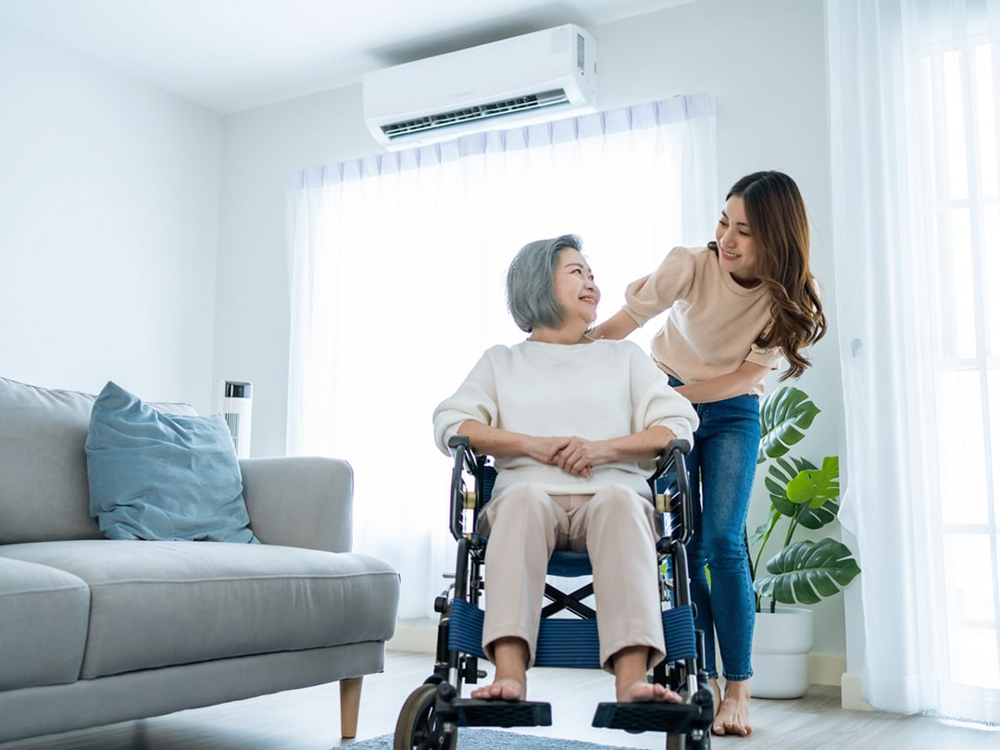

01 / FAMILY
가족이 함께
본인, 배우자, 양가 부모가
계약의 간병일수를 공유합니다.
간병인을 구하는 순간부터, 이용하는 동안까지.
리본케어와 효원상조가 함께하는 가족 간병 준비.
가족간병 240 · 월 15,000원 × 160회 · 총 240만원
13년 4개월 납입 / 간병 총 12일 또는 크루즈 1인 택일
간병 이용 시 기존 납입액을 반영한 부족금 납부와 배정 확인이 필요합니다.

갑작스러운 입원 앞에서 가족이
모든 것을 혼자 알아보지 않도록.
가족 간병의 시작과 이용 과정을 함께 준비하는 상품입니다.
본인, 배우자, 양가 부모가
계약의 간병일수를 공유합니다.
회당 최소 2일로 분할 사용.
마지막 잔여 1일도 이용할 수 있습니다.
미사용 납입액을 반영해
신청 일수의 부족금만 추가 납부합니다.
배정 안내, 교체 상담,
보호자 간병기록을 지원합니다.
가족 공유, 분할 사용, 이용분 우선 정산 등은 양사 승인 후 확정할 제안 조건입니다.
아버지의 입원에도, 배우자의 회복기에도.
한 번에 모두 쓰지 않고 나누어 이용합니다.
240형 이용 예시입니다. 가족 전체가 계약당 총 12일을 공유하며,
매 이용 시 이용금액 충당과 배정 가능 여부를 확인합니다.
이번 이용분에 부족한 금액을 납부하고, 남은 계약대금은 계속 납부합니다.
추가 납부액도 계약 총액에 포함됩니다.
총액 도달 시 월 납부를 종료하며 약정 만기는 유지합니다.
전화·온라인·QR로
필요한 간병을 신청합니다.
병원과 환자 상태, 필요 업무,
납부액을 확인합니다.
간병인 정보와 시작 일정,
제공 업무를 안내합니다.
보호자 기록을 확인하고
변경·교체를 상담합니다.
잔여 일수를 확인하고
퇴원 후 돌봄을 상담합니다.
희망 시작 24시간 전 신청 권장, 운영시간 외 48시간 전 권장. 배정 완료 보장이 아니며 지역·환자 상태·인력 확인 후 확정합니다. 상담 운영시간은 출시 전 확정 예정입니다.
신원과 자격 또는 교육 이력, 경력을 확인하고
환자 상태에 맞춰 배정을 진행합니다.
공급 측 귀책은 교체 수수료 없이 우선 대응.
단순 선호 변경은 계약당 최대 2회 매칭 수수료 면제를 제안합니다.
동의와 열람 권한을 확인한 보호자에게 실제 돌봄기록을 제공합니다.
퇴원 후 상담·연계도 지원하며 실제 방문케어는 별도 유료입니다.
교체 수수료 면제와 간병비·특수 차액은 별개입니다. 대체 인력 확보 후 교체 일정을 안내합니다.
점심 식사 시 상체를 세워드리고 식사 준비와 정리를 도왔습니다.
오후 세안과 손 씻기를 도왔습니다. 이동 전 주변을 정리했습니다.
요청하신 개인 물품의 위치를 확인하고 환자분께 안내했습니다.
필요한 간병일수와 라이프서비스 선택권을 비교해보세요.
전액 납입·약정 만기 도래·모든 서비스 미사용 조건입니다. 일부 간병 이용 시 사용분을 차감한 잔여 가치를 만기에 환급하는 안을 제안합니다. 중도해지는 별도 해약환급 기준을 적용하며, 환급 시 남은 서비스 권리는 종료됩니다.
이용금액 충당과 배정 가능 여부 확인이 필요합니다. 가입만으로 즉시 배정이 확정되지는 않으며 지역·환자 상태·희망 일정에 따라 안내합니다.
대체 인력이나 일정을 안내하고 고객이 선택합니다. 서비스가 시작되지 않으면 일수를 차감하지 않고 해당 신청을 위해 추가 납부한 미사용 금액은 반환하는 구조를 제안합니다.
일부 사용 시 사용분을 차감한 잔여 계약가치를 약정 만기에 환급하는 안입니다. 예를 들어 240형을 전액 납입하고 3일 이용했다면 만기에 180만원을 환급합니다. 중도해지는 별도 기준입니다.
환자 상태와 공급 가능 여부를 확인합니다. 추가비용 대상과 기준은 가입 시 안내하고 이용 전에 금액을 확정합니다. 주사·흡인·처치 등 의료행위는 간병 업무에서 제외합니다.
효원상조와 리본케어의 일반상조 제휴상품 제안입니다. 보험금이나 입원일당을 지급하는 보험상품이 아닙니다. 이 페이지는 계약 조건 확정 전 디자인 시안입니다.
가족 이용 범위와 납입 조건,
필요한 순간의 이용금액을 안내하는 상담 화면입니다.
디자인 시안 · 실제 상담 접수는 진행되지 않습니다.
입력 내용은 전송하거나 저장하지 않습니다.